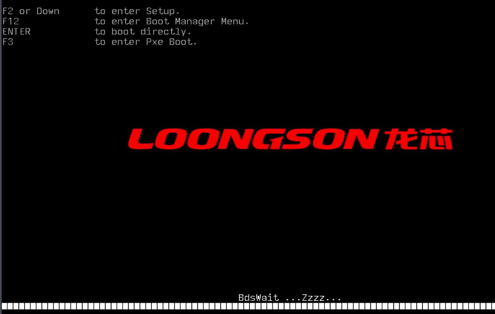
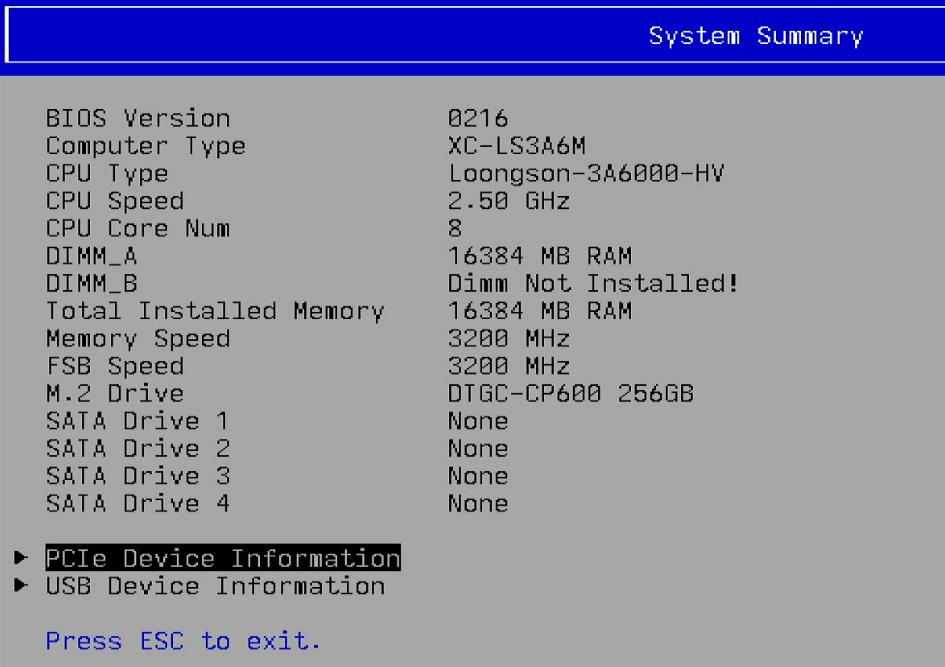
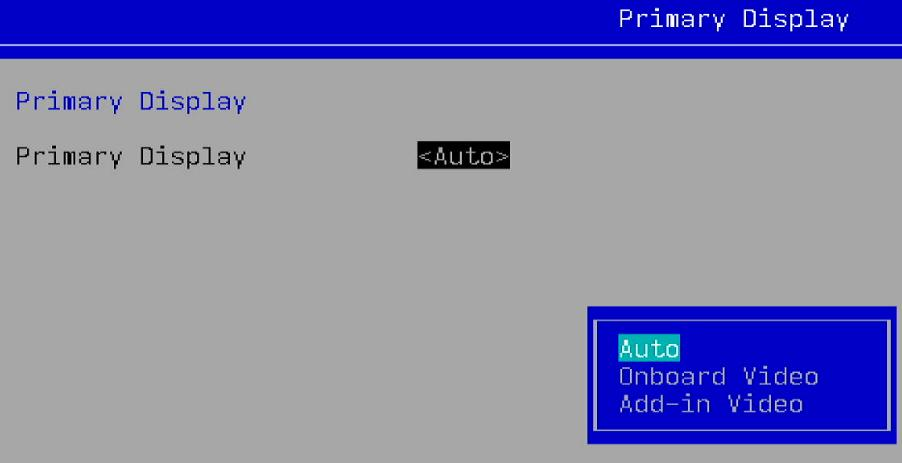
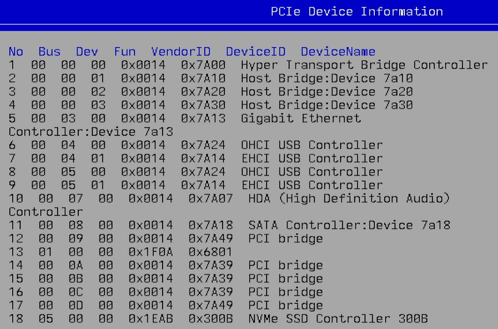
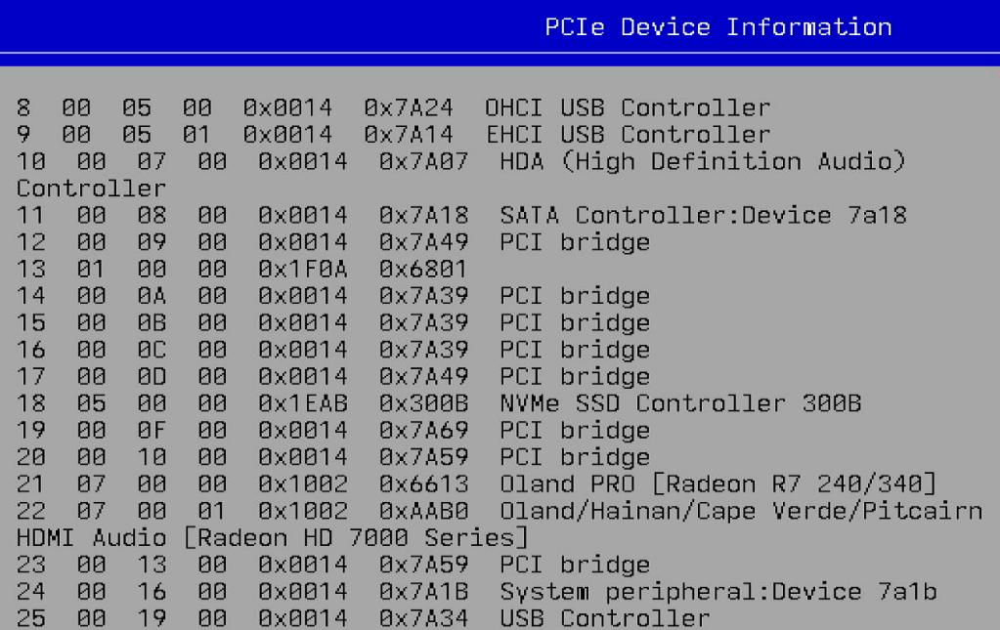
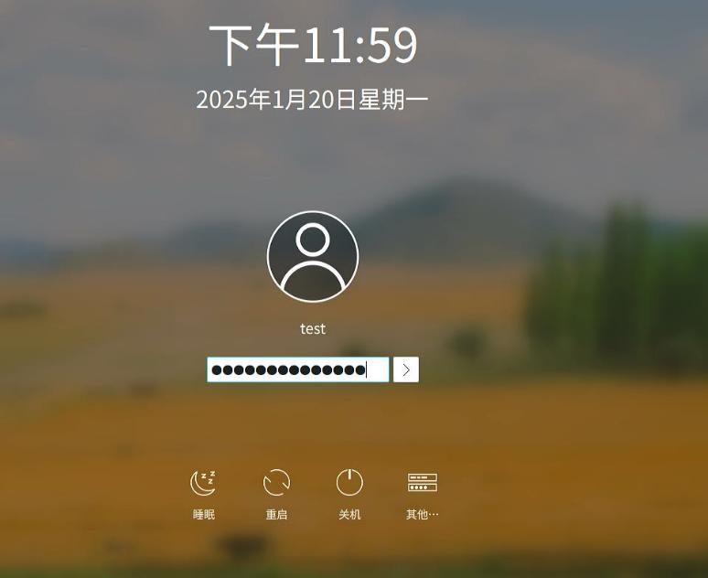

Loongson 3A6000
Hardware
Following are some screenshots for Loongson 3A6000.
Startup Logo:

System Summary:

Primary Display:

PCIe Device Information:


System/OS
Login window(Running KDE,sddm):

System information:
(ssh)test@aosc-9588454d [ ~ ] $ cat /etc/issue
\n - AOSC OS 11.5.2 / Kernel \r (\l)
(ssh)test@aosc-9588454d [ ~ ] $ uname -a
Linux aosc-9588454d 6.10.10-aosc-main #1 SMP PREEMPT_DYNAMIC Fri Sep 13 17:31:45 UTC 2024 loongarch64 GNU/Linux
(ssh)test@aosc-9588454d [ ~ ] $ free -m
total used free shared buff/cache available
内存： 16096 3105 13688 25 852 12991
交换： 15359 0 15359
(ssh)test@aosc-9588454d [ ~ ] $ cat /proc/cpuinfo
system type : generic-loongson-machine
processor : 0
package : 0
core : 0
global_id : 0
CPU Family : Loongson-64bit
Model Name : Loongson-3A6000-HV
CPU Revision : 0x00
FPU Revision : 0x00
CPU MHz : 2500.00
BogoMIPS : 5000.00
TLB Entries : 2112
Address Sizes : 48 bits physical, 48 bits virtual
ISA : loongarch32 loongarch64
Features : cpucfg lam ual fpu lsx lasx crc32 lvz lbt_x86 lbt_arm lbt_mips
Hardware Watchpoint : yes, iwatch count: 8, dwatch count: 4
Driver info:
(ssh)test@aosc-9588454d [ ~ ] $ sudo lspci -vvnn -s 00:07.0 | grep 'in use'
Kernel driver in use: snd_hda_intel
(ssh)test@aosc-9588454d [ ~ ] $ sudo lspci -vvnn -s 07:00.1 | grep 'in use'
Kernel driver in use: snd_hda_intel
(ssh)test@aosc-9588454d [ ~ ] $ sudo lspci -vvnn -s 07:00.0 | grep 'in use'
Kernel driver in use: amdgpu
(ssh)test@aosc-9588454d [ ~ ] $ sudo lspci | grep '07.0'
00:07.0 Audio device: Loongson Technology LLC HDA (High Definition Audio) Controller
07:00.0 VGA compatible controller: Advanced Micro Devices, Inc. [AMD/ATI] Oland PRO [Radeon R7 240/340 / Radeon 520] (rev 83)
07:00.1 Audio device: Advanced Micro Devices, Inc. [AMD/ATI] Oland/Hainan/Cape Verde/Pitcairn HDMI Audio [Radeon HD 7000 Series]
Virtualization
Installed packages:
(ssh)test@aosc-9588454d [ ~ ] $ sudo dpkg -l | grep qemu
ii canokey-qemu 0+git20230605 loongarch64 Library for Qemu to provide a virtual canokey to the guest OS
ii qemu 9.0.1-3 loongarch64 A KVM based virtualization client
(ssh)test@aosc-9588454d [ ~ ] $ dpkg -l | grep libvirt
ii libvirt 10.5.0 loongarch64 API for controlling virtualization engines
ii libvirt-glib 5.0.0 loongarch64 GLib bindings for LibVirt
ii libvirt-python 10.5.0 loongarch64 Python bindings for libvirt
(ssh)test@aosc-9588454d [ ~ ] $ dpkg -l | grep virt-manager
ii virt-manager 4.1.0-3 all Desktop user interface for managing virtual machines
(ssh)test@aosc-9588454d [ ~ ] $ qemu-system-loongarch64 --version
QEMU emulator version 9.0.1
Copyright (c) 2003-2024 Fabrice Bellard and the QEMU Project developers
The virtualization suites are installed via:
$ sudo apt update -y
$ sudo apt install -y virt-manager
$ sudo systemctl enable libvirtd